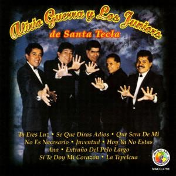
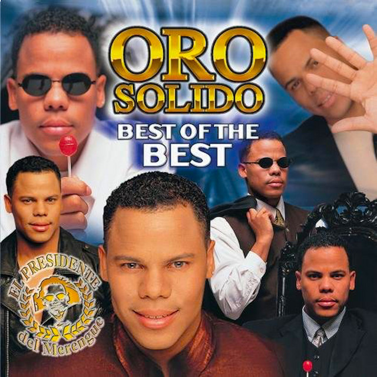
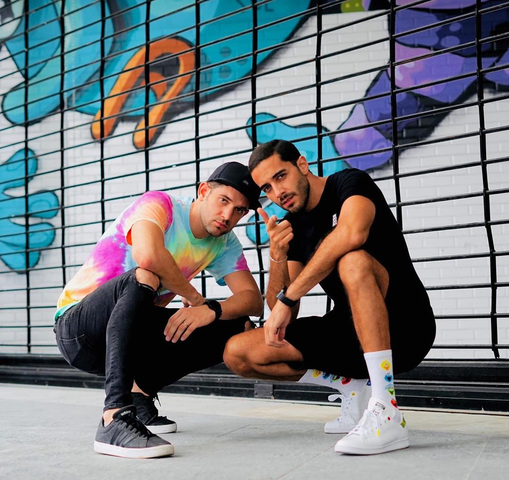

Cumbia y Tropical
Salsalvador All Stars
Año de debut: 2003
Último álbum: "Salsalvador All Stars" (2015)
Discografía:
- "Salsa y Punto" (2003)
- "Salsa Pa'l Mundo" (2005)
- "Ritmo y Sabor" (2007)
- "Salsa para Todos" (2010)
- "Salsalvador All Stars" (2015)
Redes sociales: Facebook
Espíritu Libre
Año de debut: 80's
Discografía:
- "La fiesta de mi pueblo"
- "El telegrafista"
Redes sociales: Facebook
Fredy Zelaya
Año de debut: Finales de los 90s
Discografía:
- "Cumbia Hits"
- "Sabor Tropical"
Redes sociales: No disponible (fallecio 1992)
Fiebre Amarilla
Año de debut: 1972
Discografía:
- "Fiebre Tropical"
- "Cumbias Encendidas"
Redes sociales: YouTube
Orquesta Premier
Año de debut: 1985
Último álbum: No disponible
Discografía:
- "Ritmo de mi Tierra" (1985)
- "Cumbia Caliente" (1987)
- "Sabor a Cumbia" (1990)
- "Amor de mi Vida" (1992)
- "La Fiesta" (1995)
Redes sociales: Facebook
Alfredo José
Año de debut: 1992
Último álbum: “El negro”
Discografía:
- “El botecito”
- “Oye nena”
- “Quiero que bailemos”
Redes sociales: Instagram
Alirio Guerra y Los Junior's
-

- Que sera de mi
Año de debut: 1970
Último album
Redes sociales: Facebook
Tito MIra
Año de debut: 1998
Último álbum: No disponible
Discografía:
- "Los lamentos de Rosita"
- "Cayetaño baila"
- "Cumbia de la Siguanaba"
- "Lo pagaras"
- "Chipi, chipi"
Redes sociales: Facebook
Tito Quinteros
Año de debut: 1964
Discografía:
- La pulun, pulun
- Con la misma moneda
- Cumbia bajo la lluvia
Redes sociales: No disponible
Tito Flores (Orquesta San Vicente)

Año de debut: 1985
Último álbum: "La Computadora"
Discografía:
- "La Computadora"
- "El Relámpago"
- "Moneda"
- "La Perrita Coqueta"
- "El Hijo de Don Andrés"
Redes sociales: YouTube
Los Hermanos Flores

Año de debut: 1962
Discografía:
- La bala
- La comupuadora
- Soy salvadoreño
- La secretaria
Redes sociales: Facebook
Marito Rivera y su Grupo Bravo

Año de debut: 1982
Último álbum: Bajo la luna
Discografía:
- Mentiras
- Mar y cielo
- Aventurero
Redes sociales: YouTube
Jhosse Lora
Año de debut: 2015
Último álbum: "Sentimiento"
Discografía:
- Moviendo el atol de elote
- Mi vecinita
- El silabario
Redes sociales: YouTube
René Alonso y su Banda Lasser

Año de debut: 1990
Último álbum: No disponible
Discografía:
- "Cumbia Caliente" (1991)
- "El Tamarindo" (1993)
- "Fiesta en El Salvador" (1996)
- "Cumbia de la Cerveza" (1998)
- "El Mero Mero" (2000)
Redes sociales: Facebook
Merengue
Oro Sólido
Año de debut: 1993
Último álbum: "La Morena"
Discografía:
- "Oro Sólido" (1994)
- "El Poder del Merengue" (1996)
- "Internacional" (1998)
- "Best of Oro Sólido" (2001)
- "Party Time" (2003)
Redes sociales: Facebook
Baladas Románticas
Rucks Parker
Año de debut: 1989
Último álbum: No disponible
Discografía:
- "Amor a Mil" (1990)
- "Rucks Parker" (1992)
- "Más que Ayer" (1994)
- "Siempre" (1996)
- "20 Años" (2010)
Redes sociales: Facebook
Suzu Lunar
Año de debut: 2018
Último álbum: "Viajera" (2021)
Canción más reciente: "Asunción"
Rafa Guillén
Año de debut: 1990
Último álbum: No disponible
Discografía:
- "Despierta Corazón" (1992)
- "Eres Mi Todo" (1994)
- "Volver a Empezar" (1996)
- "Déjame Soñar" (1998)
- "Amor de Mi Vida" (2000)
Redes sociales: Facebook
Álvaro Torres
Año de debut: 1985
Último álbum: Mal Acostumbrado (2016)
Discografía:
- Tres (1985)
- Nada se compara contigo (1991)
- Mal Acostumbrado (2016)
Ale Martore
Año de debut: 2004
Último álbum: Errante (2019)
Discografía:
- Bachata Rosa Cover
Redes sociales: Instagram
Rock
Ale Medina GTM
Año de debut: 1974
Último álbum: HOY (2021)
Discografía:
- Las De Antes (2012)
Redes sociales: Instagram
Roberto Salamanca
Año de debut: 1995
Último álbum: "Raíces"
Discografía:
- Volvere
- Que dificil es
- Tu prometiste
- Que tonto es el amor
Esquina Opuesta

Año de debut: 2006
Discografía:
- Traicionera
- El Superman
- Nada tienes
Redes sociales: YouTube
Rafa García
Año de debut: 1996
Último álbum: Sigue la venganza
Discografía:
- Todo mi amor (2009)
- Bolo y solo(2009)
- Nunca (2006)
Redes sociales:
Reggaeton y Hip Hop
Los Tachos
Nombre: Los tachos
Año de Debut: 2007
Discografía:
- En la playa
- Esta noche
- Summer party
Redes Sociales Oficiales:
Shaka y Dres
Nombre: Shaka y Dres
Nombre Artístico: Shaka y Dres
Canción o Álbum Más Reciente: Loco (single)
Álbumes: Abriendo Caminos (2005), Entre Líneas (2008), Renacer (2015)
Año de Debut: 2005
Redes Sociales Oficiales:
Inicios del Artista: El dúo comenzó su carrera en El Salvador, fusionando ritmos de reggae y hip hop.
Lista de Canciones: Loco, Amor Prohibido, Eres Tú, El Ritmo del Amor
Folclórica y Popular
VOCES
Nombre: VOCES
Canción o Álbum Más Reciente: Raíces (álbum)
Álbumes: Voces (2010), Canta Conmigo (2013), Raíces (2022)
Año de Debut: 2010
Redes Sociales Oficiales:
Inicios del Artista: Iniciaron como un grupo vocal que interpreta música folclórica y popular de El Salvador.
Lista de Canciones: El Carbonero, Torola, Adentro Cojutepeque, Santa Ana Mía